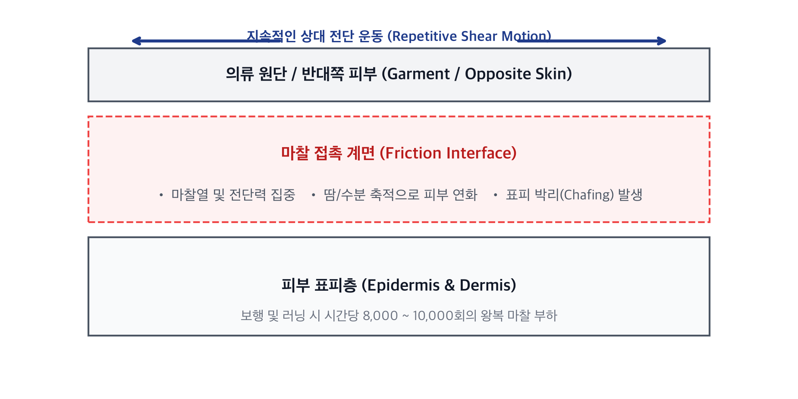
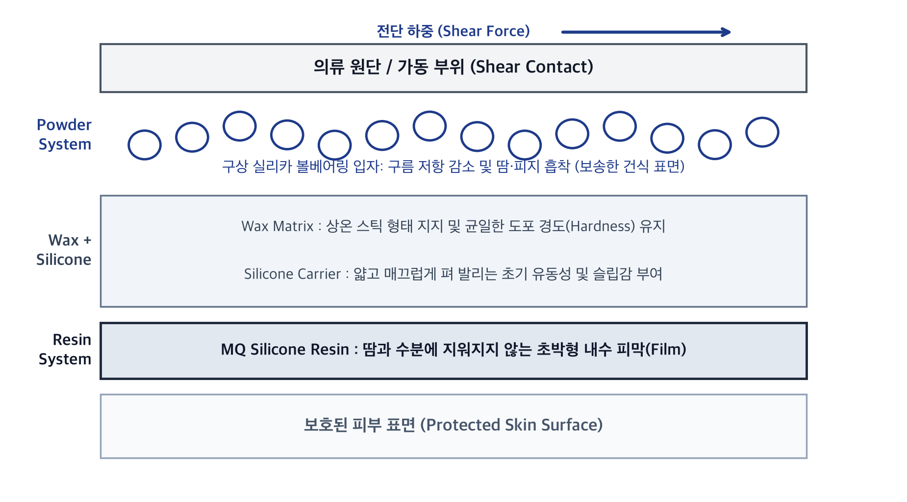
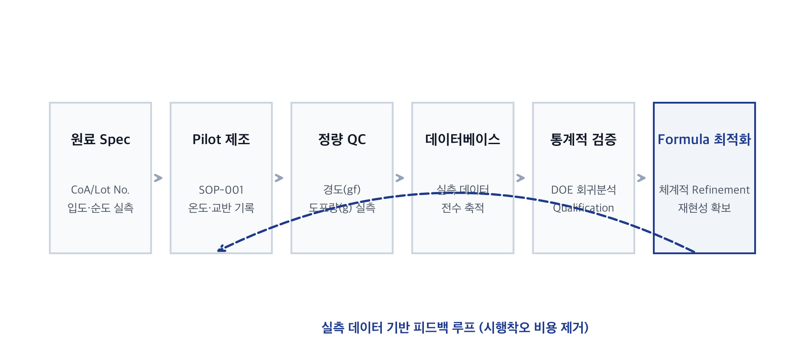
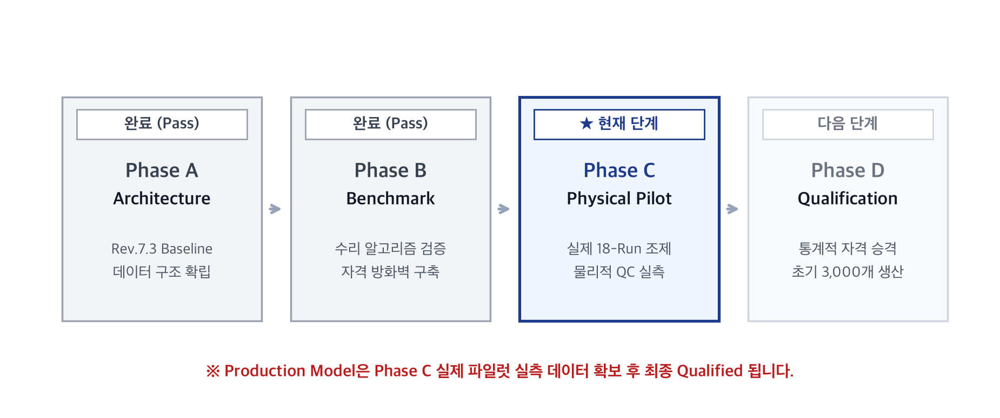

첫 제품 검증
초기 생산 목표 3,000개
• 마라토너/행군 타깃의 명확한 효능 입증
• 극단적 마찰 환경에서 코어 팬덤 구축
기능성 라인업 확장
러닝 · 등산 · 사이클 · 군용
• 땀/수분 제어, 쿨링, 피부 보호 제형
• 구축된 배합 데이터베이스 재활용
재사용 가능한 개발 구조
포뮬레이션 플랫폼 자산화
• 원료-공정-QC 데이터베이스 자산화
• 신제품 개발 주기 및 R&D 비용 획기적 절감